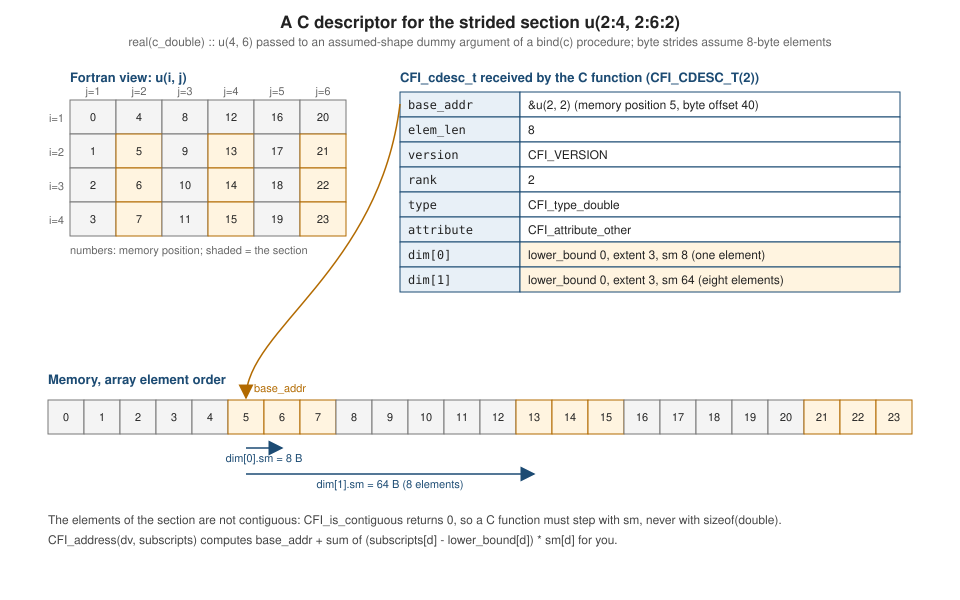

C Descriptors and ISO_Fortran_binding
|
This content was generated with the assistance of AI and should be verified against the official documentation before being relied on in production. |
This page is written against Fortran 2023 (ISO/IEC 1539-1:2023, J3/23-007r1) and was checked on 2026-10-18. Every
Fortran source file was compiled with gfortran -std=f2023 -Wall -Wextra -pedantic -fimplicit-none -fcheck=all
(GNU Fortran 16.2) and every C source file with gcc -std=c11 -Wall -Wextra -pedantic (GCC 16.2), both warning-free; each
program was run, and the same sources were also built and run against LLVM Flang 23 (flang-23 for the Fortran, GCC for the C,
with the header that ships with Flang). The output shown is real output; where the two compilers differ, the page says so
and shows both. The rules are in clauses 18.3.7 (interoperability of procedures and procedure interfaces), 18.4 (C
descriptors), 18.5 (the source file ISO_Fortran_binding.h, with its structures, macros and functions) and 18.6 to 18.8
(restrictions on C descriptors, on formal parameters and on lifetimes) of the standard.
The basic interoperability of iso_c_binding kinds, bind(c) procedures, value and c_ptr is covered in
Interoperability with C; this page starts where that one
stops. A Fortran dummy argument is interoperable with a plain C pointer only when it has a simple layout: a scalar, an
explicit-shape or assumed-size array, or an assumed-type type(*) object. Four kinds of dummy argument carry more
information than a bare address: an assumed-shape array (its extents, and a stride when the actual argument is a
section), an assumed-rank object (its rank), an allocatable or pointer object (an allocation or association status
that C may change), and a character dummy with assumed length (its length). The standard gives such an argument to C as a
C descriptor: a structure of type CFI_cdesc_t, defined in a header file ISO_Fortran_binding.h that the Fortran
processor provides, together with a small library of functions that create and manipulate descriptors. The descriptor
mechanism was specified by the technical specification ISO/IEC TS 29113:2012 and is part of the 2018 standard, as the
GNU Fortran manual states, so it
is available in Fortran 2018 and 2023 and in compilers that implement TS 29113.
The examples use the temperature field of the running example, heatflow, as the object passed across the language
boundary: a real(c_double) array u of temperatures, sections of it, probes that carry an id and a temperature, and the
name of the solver as a character argument. Examples mix Fortran and C: each is a Fortran file plus a C file, built with the
commands in Building the examples. The data type, grid_t, that heatflow uses internally is not interoperable (it has an
allocatable component), which is the usual reason to write an assumed-shape or allocatable bind(c) interface in the first
place: the C code sees an array, not the type.
When a descriptor is used
A bind(c) Fortran interface is interoperable with a C prototype under the rules of 18.3.7. The part of those rules that
matters here is what the C formal parameter looks like, which depends on the Fortran dummy argument:
Fortran dummy argument in the bind(c) interface |
C formal parameter | Clause |
|---|---|---|
a scalar or array that is interoperable (scalar, explicit-shape, assumed-size), with or without |
a pointer to the C type (or the C type itself with |
18.3.7 |
|
|
18.3.7 (5) |
assumed-shape, assumed-rank or allocatable dummy, or a pointer dummy without the |
|
18.3.7 (5) |
assumed-type |
|
18.3.7 (5) |
allocatable or pointer dummy of type character |
must have deferred length; |
18.3.7 (6) |
an optional dummy argument |
a null pointer when the actual argument is absent |
18.3.7 |
(The standard’s wording attaches "without the CONTIGUOUS attribute" to the whole list; both compilers pass a descriptor for a
contiguous assumed-shape dummy, as examples 09 and 10 below show, and 18.3.7 goes on to describe the contiguity of the
object that such a descriptor describes.) The same text says that, from C, the actual argument for such a formal parameter is the address of a C descriptor for the
intended effective argument, and that the type and attribute members must agree with the dummy argument. The Fortran
compiler builds the descriptor when Fortran calls C; the C programmer builds it when C calls Fortran. Either way the C code
reads and possibly modifies it only through the functions and members described below.
The header ISO_Fortran_binding.h
The header (18.5.1) holds structure definitions, typedefs, macros and function prototypes; it may be included in any order
relative to the standard C headers and more than once. A C source file that includes it shall not use names starting with
CFI_ that the header does not define. Its location is processor dependent: it is installed with the compiler. In the
container used for this page it is /usr/local/lib/gcc/aarch64-linux-gnu/16.2.0/include/ISO_Fortran_binding.h for GNU
Fortran, which gcc finds without a flag, and /usr/lib/llvm-23/include/flang/ISO_Fortran_binding.h for Flang, which needs
-I/usr/lib/llvm-23/include/flang. The two headers are not the same file: the values of many macros differ, as the
tables below show, so C code must always use the macro names and never their numeric values.
CFI_dim_t and CFI_cdesc_t
CFI_dim_t (18.5.2) describes one dimension of an array; it has at least these members, in any order:
| Member | Meaning |
|---|---|
|
the lower bound of the dimension |
|
the number of elements in the dimension, or |
|
the memory stride of the dimension: the difference in bytes between the addresses of successive elements |
CFI_cdesc_t (18.5.3) is a typedef name for a structure with a flexible array member. The first three members are
base_addr, elem_len and version in that order, the last is dim, and the others lie between version and dim in any
order:
| Member | Meaning |
|---|---|
|
a null pointer for an unallocated allocatable or a disassociated pointer; for a zero-sized object a non-null, otherwise processor-dependent value; otherwise the address of the object, which for an array is the address of the first element in array element order |
|
the storage size in bytes of the object (a scalar) or of one element (an array); for a character object the length times the bytes of one character |
|
the value of |
|
the number of dimensions, zero for a scalar |
|
a type code from Attribute and type codes |
|
an attribute code: pointer, allocatable, or neither |
|
as many elements as the rank; each gives the lower bound, extent and byte stride of one dimension |
Three rules about the contents are easy to miss. The lower_bound members of an allocatable array or a pointer are set by
argument association, allocation or pointer association; for a nonallocatable, nonpointer object (for example an
assumed-shape dummy argument) they are zero, whatever the lower bounds of the Fortran actual argument are. The strides
must be consistent with a non-overlapping layout: there is an ordering of the dimensions in which the absolute value of
the first stride is at least elem_len and each following stride is at least the previous stride times the previous
extent, which allows reordered subscripts (a transposed view) without a copy. And the strides are in bytes and may be
negative, so a C function must step with sm, never with sizeof of the element type.
The structure is meant to be read: a C function receiving a const CFI_cdesc_t * may look at every member. It is not meant
to be written except through the functions below (18.6): descriptors are not initialised, updated or copied in any other way.

CFI_CDESC_T, CFI_index_t, CFI_rank_t, CFI_MAX_RANK and CFI_VERSION
A C function cannot declare a CFI_cdesc_t variable, because the structure has a flexible array member. The macro
CFI_CDESC_T(r) (18.5.4) takes the rank r as an integer constant expression, 0 to CFI_MAX_RANK, and expands to an
unqualified type of suitable size and alignment to hold a descriptor of that rank. A variable declared with it cannot have
an initializer, and its address is not usable where a CFI_cdesc_t * is expected without an explicit cast:
CFI_CDESC_T(2) storage; /* room for a rank-2 descriptor */
CFI_cdesc_t *d = (CFI_cdesc_t *)&storage; /* the pointer every CFI_ function takes */CFI_index_t is a signed integer type wide enough for the difference of two pointers (ptrdiff_t in both headers), and
should be used for every subscript, extent and bound. CFI_rank_t, CFI_attribute_t and CFI_type_t are integer types
wide enough for their values; their widths differ between the headers (in GNU Fortran’s header CFI_rank_t and
CFI_attribute_t are int8_t and CFI_type_t is int16_t, while in Flang’s CFI_rank_t and CFI_attribute_t are
unsigned char and CFI_type_t is signed char), so a literal outside the range of a code needs a cast. CFI_MAX_RANK
is the largest rank supported, at least 15; both compilers use 15. CFI_VERSION encodes the version of the header and is
increased when a new version is incompatible with the old one. It is 1 in GNU Fortran’s header and 20240719 in Flang’s. The
version member of a descriptor holds this value so that a descriptor built with one version of the header can be recognised
by a runtime built with another.
Looking at a descriptor
The first example prints everything a C function can learn from the descriptor of an assumed-shape dummy argument. The
Fortran side declares u(:, :) in a bind(c) interface; the C side takes const CFI_cdesc_t *.
#include <stdio.h>
#include <ISO_Fortran_binding.h>
static const char *attribute_name(CFI_attribute_t a)
{
if (a == CFI_attribute_pointer) return "pointer";
if (a == CFI_attribute_allocatable) return "allocatable";
if (a == CFI_attribute_other) return "other";
return "unknown";
}
void describe(const CFI_cdesc_t *d)
{
printf(" rank=%d elem_len=%zu attribute=%s double=%s\n", (int)d->rank, d->elem_len,
attribute_name(d->attribute), d->type == CFI_type_double ? "yes" : "no");
for (int i = 0; i < d->rank; i++)
printf(" dim[%d]: lower_bound=%ld extent=%ld sm=%ld\n", i, (long)d->dim[i].lower_bound,
(long)d->dim[i].extent, (long)d->dim[i].sm);
printf(" contiguous=%d\n", CFI_is_contiguous(d));
fflush(stdout);
}module descr_api
use, intrinsic :: iso_c_binding, only: c_double
implicit none
interface
subroutine describe(u) bind(c, name='describe')
import :: c_double
real(c_double), intent(in) :: u(:, :)
end subroutine describe
end interface
end module descr_api
program describe_demo
use, intrinsic :: iso_c_binding, only: c_double
use, intrinsic :: iso_fortran_env, only: output_unit
use descr_api, only: describe
implicit none
integer, parameter :: nx = 4, ny = 6
real(c_double), target :: u(nx, ny)
real(c_double) :: v(0:3, -1:1)
integer :: i, j
u = reshape([((real(10 * i + j, c_double), i = 1, nx), j = 1, ny)], [nx, ny])
v = 0.0_c_double
print '(a)', 'whole array u(1:4, 1:6):'
flush (output_unit)
call describe(u)
print '(a)', 'section u(2:4, 2:6:2):'
flush (output_unit)
call describe(u(2:4, 2:6:2))
print '(a)', 'column block u(:, 5:6):'
flush (output_unit)
call describe(u(:, 5:6))
print '(a)', 'array v(0:3, -1:1) declared with other lower bounds:'
flush (output_unit)
call describe(v)
end program describe_demoThe program calls describe with the whole array, with a strided section, with a block of columns, and with an array
declared with other lower bounds:
whole array u(1:4, 1:6):
rank=2 elem_len=8 attribute=other double=yes
dim[0]: lower_bound=0 extent=4 sm=8
dim[1]: lower_bound=0 extent=6 sm=32
contiguous=1
section u(2:4, 2:6:2):
rank=2 elem_len=8 attribute=other double=yes
dim[0]: lower_bound=0 extent=3 sm=8
dim[1]: lower_bound=0 extent=3 sm=64
contiguous=0
column block u(:, 5:6):
rank=2 elem_len=8 attribute=other double=yes
dim[0]: lower_bound=0 extent=4 sm=8
dim[1]: lower_bound=0 extent=2 sm=32
contiguous=1
array v(0:3, -1:1) declared with other lower bounds:
rank=2 elem_len=8 attribute=other double=yes
dim[0]: lower_bound=0 extent=4 sm=8
dim[1]: lower_bound=0 extent=3 sm=32
contiguous=1The output is identical for GNU Fortran 16.2 and Flang 23. Everything stated above can be read in it. The element length is
8 (real(c_double)), the attribute is CFI_attribute_other because the dummy argument is neither allocatable nor a pointer,
and every lower_bound is zero even for v(0:3, -1:1), whose Fortran lower bounds are 0 and -1. The whole array has strides
8 and 32 bytes: one element, and four elements (one column of four 8-byte reals). The section u(2:4, 2:6:2) has extents 3
and 3 and strides 8 and 64: stepping two columns is stepping 64 bytes, and the descriptor reports contiguous=0 because
the elements are not adjacent. The block of columns u(:, 5:6) is a sub-array that happens to be contiguous, so it gets
contiguous=1; no data is copied in any of these calls. The descriptor of u was not changed by Fortran or by C: the
dummy argument has no intent(out), and C is not allowed to modify a descriptor that corresponds to a nonallocatable,
nonpointer object (18.6).
Attribute and type codes
Attribute codes
The macros of Table 18.3 give the value of the attribute member:
| Macro | Fortran object | GNU Fortran 16.2 | Flang 23 |
|---|---|---|---|
|
data pointer |
0 |
1 |
|
allocatable |
1 |
2 |
|
nonallocatable, nonpointer |
2 |
0 |
The standard requires only that the values are nonnegative and distinct. The numbers in the last two columns come from
example 08_errors.c below; a program that tests d->attribute == 0 is correct for one compiler and wrong for the other.
Type codes
The type member says what the elements are. Table 18.4 lists the macros; the first column below is the macro, the second
the C type it stands for and the third the Fortran type it corresponds to:
| Macro | C type | Typical Fortran declaration |
|---|---|---|
|
|
|
|
|
|
|
|
|
|
|
|
|
|
|
|
|
|
|
|
|
|
|
|
|
|
|
|
an interoperable C structure |
|
|
not otherwise specified |
any other type (for example a type with kind not listed) |
The values for different C types can be the same (CFI_type_int and CFI_type_int32_t may be equal). The value of
CFI_type_other is negative and distinct from all others, and CFI_type_struct is positive and distinct from all others;
if a C type is not interoperable with a Fortran kind the processor supports, its macro is negative, otherwise positive. A
processor may add type codes for its own kinds (extension kinds); Flang’s header has, for example, codes for half_float
(kind=2) and float128.
The numbers are processor dependent and the two compilers choose very differently. GNU Fortran encodes the intrinsic type in
the low byte and the kind in the bits above it, as its header explains (CFI_type_double is CFI_type_Real + (sizeof (double) << 8)),
so a mask of CFI_type_mask recovers the intrinsic type of a code; Flang numbers its codes consecutively. The program of
the section on error codes prints them for the compiler it is built with. What a C function should do is compare with the
macros:
if (d->type != CFI_type_double) return CFI_INVALID_TYPE; /* portable */A descriptor received through a bind(c) interface has the type the interface declares, so a check like this is only
needed in a generic C function whose Fortran interface accepts several types (an assumed-type or assumed-rank object), and in
a C function that builds descriptors for others.
The library functions
The functions of 18.5.5 return an error indicator: zero (CFI_SUCCESS) for no error and a nonzero value, one of the
macros of Error codes, otherwise (except CFI_address, which returns a pointer, and CFI_is_contiguous, which returns
1 or 0). The standard allows each function to be a macro or an identifier with external linkage, and says that
suppressing a macro definition to reach the real function is undefined, so take the address of nothing in the header. When
a call could detect more than one error, which one is reported is processor dependent. If an error is detected the
descriptor passed to be changed is not modified. Arguments that represent subscripts, bounds, extents or strides are in
the same order as the dim array of the descriptor (first dimension first, which is the Fortran order, not the C order).
| Function | What it does | Clause |
|---|---|---|
|
initialises a descriptor declared in C with |
18.5.5.5 |
|
the C address of the element with these subscripts, or of the scalar when |
18.5.5.2 |
|
allocates the object with the Fortran |
18.5.5.3 |
|
deallocates with the |
18.5.5.4 |
|
1 if the array is contiguous, 0 otherwise; |
18.5.5.6 |
|
updates |
18.5.5.7 |
|
updates |
18.5.5.8 |
|
makes the pointer described by |
18.5.5.9 |
The rest of the page uses each in turn. The rules that every function shares are in 18.5.5.1; the ones that differ are stated with the function.
CFI_address and walking an array of any rank
CFI_address(dv, subscripts) computes base_addr plus, for each dimension, (subscripts[i] - lower_bound[i]) * sm[i] bytes,
so a C function that uses it needs no knowledge of contiguity, the order of the dimensions or negative strides. The subscripts
are in the bounds recorded in the descriptor (zero-based for a nonallocatable, nonpointer object). For a scalar the argument is
a null pointer. This is how to write one C function that handles every rank and every layout: the Fortran interface declares the
dummy argument assumed-rank, x(..), which is also interoperable (18.3.7), and the C function reads rank and loops over an
odometer of subscripts.
#include <stddef.h>
#include <ISO_Fortran_binding.h>
/* Sum every element of a double array of any rank, in any memory layout.
Returns the sum through *total and the number of elements through *count. */
int sum_any_rank(const CFI_cdesc_t *x, double *total, long *count)
{
CFI_index_t sub[CFI_MAX_RANK];
CFI_index_t n = 1;
if (x->type != CFI_type_double)
return CFI_INVALID_TYPE;
*total = 0.0;
*count = 0;
if (x->rank == 0) { /* a scalar: no subscripts */
*total = *(const double *)CFI_address(x, NULL);
*count = 1;
return CFI_SUCCESS;
}
for (int d = 0; d < x->rank; d++) {
n *= x->dim[d].extent;
sub[d] = x->dim[d].lower_bound; /* start at the first element */
}
for (CFI_index_t k = 0; k < n; k++) { /* odometer over the subscripts */
*total += *(const double *)CFI_address(x, sub);
(*count)++;
for (int d = 0; d < x->rank; d++) {
if (++sub[d] < x->dim[d].lower_bound + x->dim[d].extent)
break;
sub[d] = x->dim[d].lower_bound;
}
}
return CFI_SUCCESS;
}module descr_sum
use, intrinsic :: iso_c_binding, only: c_double, c_int, c_long
implicit none
interface
function sum_any_rank_c(x, total, count) result(stat) bind(c, name='sum_any_rank')
import :: c_double, c_int, c_long
real(c_double), intent(in) :: x(..)
real(c_double), intent(out) :: total
integer(c_long), intent(out) :: count
integer(c_int) :: stat
end function sum_any_rank_c
end interface
end module descr_sum
program sum_demo
use, intrinsic :: iso_c_binding, only: c_double, c_int, c_long
use descr_sum, only: sum_any_rank_c
implicit none
real(c_double) :: s, total, cube(2, 3, 4), field(5, 6)
real(c_double) :: line(7)
integer(c_long) :: n
integer(c_int) :: stat
integer :: i
s = 2.5_c_double
line = [(real(i, c_double), i = 1, 7)]
field = reshape([(real(i, c_double), i = 1, 30)], [5, 6])
cube = 1.0_c_double
stat = sum_any_rank_c(s, total, n)
print '(a, i0, a, f8.2, a, i0)', 'scalar stat=', stat, ' total=', total, ' count=', n
stat = sum_any_rank_c(line, total, n)
print '(a, i0, a, f8.2, a, i0)', 'vector stat=', stat, ' total=', total, ' count=', n
stat = sum_any_rank_c(field, total, n)
print '(a, i0, a, f8.2, a, i0, a, f8.2)', 'matrix stat=', stat, ' total=', total, ' count=', n, &
' sum()=', sum(field)
stat = sum_any_rank_c(field(2:5:3, ::2), total, n)
print '(a, i0, a, f8.2, a, i0, a, f8.2)', 'section stat=', stat, ' total=', total, ' count=', n, &
' sum()=', sum(field(2:5:3, ::2))
stat = sum_any_rank_c(cube, total, n)
print '(a, i0, a, f8.2, a, i0)', 'rank 3 stat=', stat, ' total=', total, ' count=', n
stat = sum_any_rank_c(transpose(field), total, n)
print '(a, i0, a, f8.2, a, i0)', 'transposed stat=', stat, ' total=', total, ' count=', n
end program sum_demoscalar stat=0 total= 2.50 count=1
vector stat=0 total= 28.00 count=7
matrix stat=0 total= 465.00 count=30 sum()= 465.00
section stat=0 total= 81.00 count=6 sum()= 81.00
rank 3 stat=0 total= 24.00 count=24
transposed stat=0 total= 465.00 count=30GNU Fortran 16.2 and Flang 23 print the same lines. The one C function sums a scalar (rank == 0, subscripts omitted), a
vector, a matrix, a rank-3 array, a strided section and transpose(field); the last needs no special case, because whatever the compiler passes for the temporary result of transpose, the C function
reads the right elements through CFI_address. The count and the sum agree with the Fortran sum of the
same array and section. Notice that the Fortran dummy argument has intent(in) and the C parameter const; the descriptor
must not be modified for an intent(in) dummy (18.6), and the data must not be changed through it (18.7).
The loop is not fast: CFI_address does a multiply per dimension per element. Its use is the portable baseline; Contiguity
shows the fast path for contiguous data. The assumed-rank array is also handled in Fortran with select rank, covered in
Array Arguments: Assumed Shape, Size and Rank.
Contiguity
A Fortran array section need not be contiguous, and a C function written with pointer arithmetic (p[i]) is only correct for
contiguous data. There are two tools. CFI_is_contiguous(dv) (18.5.5.6) returns 1 if the array described by dv is
contiguous and 0 otherwise; the base_addr must not be null, and an assumed-size or allocatable array always gives 1. It
lets a C function choose a fast path (a plain loop over base_addr) for contiguous data and the general path (CFI_address,
or stepping by sm) otherwise. And the contiguous attribute on the Fortran interface moves the burden to the compiler:
when Fortran calls a C procedure whose interface has a dummy argument with the contiguous attribute (or an assumed-length
character explicit-shape or assumed-size array) and the actual argument is discontiguous, the processor shall make sure the C
procedure receives a descriptor for a contiguous object (18.3.7), that is, a copy.
The next program shows both. The C function deliberately takes the fast path without testing: it reads base_addr with unit
stride and prints what the descriptor says. It is exported under two names so that two interface bodies, one with and one
without contiguous, can each have their own binding label.
#include <stdio.h>
#include <ISO_Fortran_binding.h>
/* A fast path that is only correct for contiguous data: it walks base_addr with unit stride. */
static double sum_fast(const CFI_cdesc_t *x)
{
const double *p = x->base_addr;
double s = 0.0;
printf(" C: extent=%ld sm=%ld contiguous=%d\n", (long)x->dim[0].extent, (long)x->dim[0].sm,
CFI_is_contiguous(x));
fflush(stdout);
for (CFI_index_t i = 0; i < x->dim[0].extent; i++)
s += p[i];
return s;
}
/* Two entry points so that each Fortran interface body has its own binding label. */
double sum_fast_plain(const CFI_cdesc_t *x) { return sum_fast(x); }
double sum_fast_contig(const CFI_cdesc_t *x) { return sum_fast(x); }program contiguous_c_side
use, intrinsic :: iso_c_binding, only: c_double
use, intrinsic :: iso_fortran_env, only: output_unit
implicit none
interface
function sum_fast_plain(x) result(s) bind(c, name='sum_fast_plain')
import :: c_double
real(c_double), intent(in) :: x(:)
real(c_double) :: s
end function sum_fast_plain
function sum_fast_contig(x) result(s) bind(c, name='sum_fast_contig')
import :: c_double
real(c_double), contiguous, intent(in) :: x(:)
real(c_double) :: s
end function sum_fast_contig
end interface
real(c_double) :: a(10), s
integer :: i
a = [(real(i, c_double), i = 1, 10)]
print '(a, f6.1)', 'Fortran sum(a(1:10:2)) =', sum(a(1:10:2))
flush (output_unit)
s = sum_fast_plain(a(1:10:2))
print '(a, f6.1)', 'plain interface: ', s
flush (output_unit)
s = sum_fast_contig(a(1:10:2))
print '(a, f6.1)', 'contiguous interface: ', s
end program contiguous_c_sideFortran sum(a(1:10:2)) = 25.0
C: extent=5 sm=16 contiguous=0
plain interface: 15.0
C: extent=5 sm=8 contiguous=1
contiguous interface: 25.0GNU Fortran 16.2 and Flang 23 print the same lines. With the plain interface the descriptor of a(1:10:2) has stride 16 bytes
and contiguous=0, and the loop that ignores the stride adds the first five elements, 1 to 5, and prints 15.0 instead of 25.0:
nothing is diagnosed. With the contiguous interface the compiler copied the section into a temporary, the C function saw
stride 8 and contiguous=1, and the answer is right. With -fcheck=all GNU Fortran also writes a run-time warning to the
error stream, Fortran runtime warning: An array temporary was created for argument 'x' of procedure 'sum_fast_contig', which
is the copy-in. A C function that is meant to accept any layout should not rely on contiguous, because a C caller that
builds the descriptor itself may pass a discontiguous object (NOTE 5 after 18.3.7); the cases of C calling Fortran are in
C calling Fortran.
Allocatable dummy arguments
An allocatable dummy argument reaches C as a descriptor with attribute equal to CFI_attribute_allocatable. C may allocate
and deallocate the object only through CFI_allocate and CFI_deallocate (18.7), which use the same mechanism as the Fortran
allocate and deallocate statements; these functions change the allocation status of the Fortran variable the descriptor
describes. CFI_allocate(dv, lower_bounds, upper_bounds, elem_len) needs a descriptor with the rank and type already set,
base_addr equal to a null pointer and attribute equal to CFI_attribute_allocatable or CFI_attribute_pointer. The
lower and upper bounds (arrays of at least rank elements, ignored for a scalar) replace any bounds in the descriptor, and
elem_len is used only for a character type, where it overrides the element length; otherwise it is ignored. The element
length of a noncharacter type is already in the descriptor. CFI_deallocate(dv) deallocates the object, sets base_addr to a
null pointer, and requires an object that was allocated by the allocate mechanism (for a pointer, one that is associated
with a target that deallocate could free).
The example allocates the temperature field in C, with lower bounds 1, fills it, and frees it. The interface uses intent(out)
for the allocating call: an allocatable dummy with intent(out) is deallocated on entry, so C always sees a
null base_addr, which is what CFI_allocate requires.
#include <ISO_Fortran_binding.h>
/* Allocate an nx-by-ny allocatable array of double with lower bounds 1 and
fill it with a uniform temperature. */
int make_field(CFI_cdesc_t *u, int nx, int ny, double t0)
{
CFI_index_t lower[2] = {1, 1};
CFI_index_t upper[2] = {nx, ny};
int stat = CFI_allocate(u, lower, upper, 0); /* elem_len is ignored for non-character types */
if (stat != CFI_SUCCESS)
return stat;
for (CFI_index_t j = 0; j < ny; j++)
for (CFI_index_t i = 0; i < nx; i++) {
CFI_index_t sub[2] = {1 + i, 1 + j};
*(double *)CFI_address(u, sub) = t0 + 0.5 * (double)(i + j);
}
return CFI_SUCCESS;
}
/* Free it again; the descriptor's base_addr becomes NULL. */
int release_field(CFI_cdesc_t *u)
{
return CFI_deallocate(u);
}module descr_alloc
use, intrinsic :: iso_c_binding, only: c_double, c_int
implicit none
interface
function make_field(u, nx, ny, t0) result(stat) bind(c, name='make_field')
import :: c_double, c_int
real(c_double), allocatable, intent(out) :: u(:, :)
integer(c_int), value :: nx, ny
real(c_double), value :: t0
integer(c_int) :: stat
end function make_field
function release_field(u) result(stat) bind(c, name='release_field')
import :: c_double, c_int
real(c_double), allocatable, intent(inout) :: u(:, :)
integer(c_int) :: stat
end function release_field
end interface
end module descr_alloc
program alloc_demo
use, intrinsic :: iso_c_binding, only: c_double, c_int
use descr_alloc, only: make_field, release_field
implicit none
real(c_double), allocatable :: u(:, :)
integer(c_int) :: stat
stat = make_field(u, 4_c_int, 3_c_int, 20.0_c_double)
print '(a, i0, a, l1)', 'make_field: stat=', stat, ' allocated=', allocated(u)
print '(a, 2i3, a, 2i3)', 'shape and lower bounds:', shape(u), ' /', lbound(u)
print '(a, f6.2, a, f6.2)', 'u(1,1)=', u(1, 1), ' u(4,3)=', u(4, 3)
stat = release_field(u)
print '(a, i0, a, l1)', 'release_field: stat=', stat, ' allocated=', allocated(u)
end program alloc_demomake_field: stat=0 allocated=T
shape and lower bounds: 4 3 / 1 1
u(1,1)= 20.00 u(4,3)= 22.50
release_field: stat=0 allocated=FBoth compilers print the same lines. On return the Fortran variable is allocated with the shape and lower bounds C supplied,
and after release_field it is unallocated again. Two details. The elements are addressed through CFI_address with
Fortran subscripts, {1 + i, 1 + j}, because the lower bounds of an allocatable array are those given to CFI_allocate
(and not zero, which is the rule only for nonallocatable, nonpointer objects). And the interface of make_field must not
use intent(inout) when the actual argument can be unallocated and never defined: with a variable that is passed as
unallocated to an intent(inout) allocatable dummy, GNU Fortran 16.2 reports -Wmaybe-uninitialized warnings about the
descriptor’s bounds at the call. intent(out) states the true contract, that the callee creates the object.
Calling CFI_allocate on an already-allocated array is an error, CFI_ERROR_BASE_ADDR_NOT_NULL; the section on error codes
exercises it. There is no reallocate function: a C function that must grow an array deallocates it and allocates again, copying the
elements in between. A character allocatable needs a deferred length
(character(kind=c_char, len=:), allocatable), and then the elem_len argument of CFI_allocate sets the length (this
case is described by the standard and was not run here).
Pointer dummy arguments and array sections
A pointer dummy argument reaches C as a descriptor with attribute equal to CFI_attribute_pointer. C changes what the pointer
points to with CFI_setpointer(result, source, lower_bounds) (18.5.5.9): the pointer described by result becomes associated
with the whole of the object described by source (an allocated allocatable, a data pointer or a nonallocatable nonpointer
object that is not assumed-size), with the lower bounds replaced by lower_bounds when that is not null, or disassociated
when source is a null pointer or a disassociated pointer. The ranks and types of the two descriptors shall be equal. To
point at a part of an array, C first builds a descriptor of that part with CFI_section (18.5.5.7) or CFI_select_part
(18.5.5.8), then passes it to CFI_setpointer. CFI_allocate also works for a pointer: it allocates a new anonymous
target for it.
CFI_section(result, source, lower_bounds, upper_bounds, strides) updates result, which must have been established with the
rank of source minus the number of zero strides, the same type and element length, and the attribute CFI_attribute_other
or CFI_attribute_pointer (a pointer if result is a formal parameter that corresponds to a Fortran actual argument). It
describes the Fortran section source(l1:u1:s1, l2:u2:s2, ...): a null lower_bounds or upper_bounds means the lower or
upper bound of that dimension of source, a null strides means 1 for every dimension, and a stride of zero selects the single
subscript l (which must equal u) and removes that dimension from the result, so A(:, 42) has a smaller rank than A. The
bounds are in the bounds recorded in source, that is, zero-based for a nonallocatable nonpointer object.
The example points a Fortran pointer at the interior window u(2:5, 2:4) of the field from inside C, writes through the
pointer from Fortran, and disassociates it again. The dummy argument u has target so that the pointer stays valid after the
call (18.8): without target on the dummy, all C pointers into the object, and the Fortran pointer with them, would become
undefined on return.
#include <ISO_Fortran_binding.h>
/* Point p at the interior window u(i1:i2, j1:j2) of the whole array u, using
Fortran (1-based) subscripts. u must have the target attribute in the caller. */
int window(CFI_cdesc_t *p, const CFI_cdesc_t *u, int i1, int i2, int j1, int j2)
{
CFI_CDESC_T(2) section;
CFI_cdesc_t *s = (CFI_cdesc_t *)§ion;
CFI_index_t lower[2], upper[2];
CFI_index_t new_lower[2] = {1, 1};
CFI_index_t strides[2] = {1, 1}; /* the pointer's own lower bounds */
int stat;
/* A descriptor for a nonallocatable array always has lower bounds 0. */
lower[0] = i1 - 1 + u->dim[0].lower_bound;
upper[0] = i2 - 1 + u->dim[0].lower_bound;
lower[1] = j1 - 1 + u->dim[1].lower_bound;
upper[1] = j2 - 1 + u->dim[1].lower_bound;
stat = CFI_establish(s, NULL, CFI_attribute_other, CFI_type_double, sizeof(double), 2, NULL);
if (stat != CFI_SUCCESS)
return stat;
stat = CFI_section(s, u, lower, upper, strides); /* see below: pass strides explicitly */
if (stat != CFI_SUCCESS)
return stat;
return CFI_setpointer(p, s, new_lower); /* p now describes the section */
}
/* Disassociate the pointer. */
int unlink_window(CFI_cdesc_t *p)
{
return CFI_setpointer(p, NULL, NULL);
}module descr_window
use, intrinsic :: iso_c_binding, only: c_double, c_int
implicit none
interface
function window(p, u, i1, i2, j1, j2) result(stat) bind(c, name='window')
import :: c_double, c_int
real(c_double), pointer, intent(out) :: p(:, :)
real(c_double), target, intent(in) :: u(:, :)
integer(c_int), value :: i1, i2, j1, j2
integer(c_int) :: stat
end function window
function unlink_window(p) result(stat) bind(c, name='unlink_window')
import :: c_double, c_int
real(c_double), pointer, intent(inout) :: p(:, :)
integer(c_int) :: stat
end function unlink_window
end interface
end module descr_window
program window_demo
use, intrinsic :: iso_c_binding, only: c_double, c_int
use descr_window, only: window, unlink_window
implicit none
integer, parameter :: nx = 6, ny = 5
real(c_double), target :: u(nx, ny)
real(c_double), pointer :: p(:, :)
integer(c_int) :: stat
u = 0.0_c_double
p => null()
stat = window(p, u, 2_c_int, 5_c_int, 2_c_int, 4_c_int)
print '(a, i0, a, l1)', 'window: stat=', stat, ' associated=', associated(p)
print '(a, 2i3, a, 2i3, a, 2i3)', 'shape:', shape(p), ' lbound:', lbound(p), ' ubound:', ubound(p)
p = 100.0_c_double ! writes through the pointer into u
print '(a, 6f6.1)', 'u(:, 1) =', u(:, 1)
print '(a, 6f6.1)', 'u(:, 2) =', u(:, 2)
print '(a, 6f6.1)', 'u(:, 5) =', u(:, 5)
u(2, 2) = -1.0_c_double
print '(a, f6.1)', 'p(1, 1) after u(2, 2) = -1:', p(1, 1)
stat = unlink_window(p)
print '(a, i0, a, l1)', 'unlink_window: stat=', stat, ' associated=', associated(p)
end program window_demowindow: stat=0 associated=T
shape: 4 3 lbound: 1 1 ubound: 4 3
u(:, 1) = 0.0 0.0 0.0 0.0 0.0 0.0
u(:, 2) = 0.0 100.0 100.0 100.0 100.0 0.0
u(:, 5) = 0.0 0.0 0.0 0.0 0.0 0.0
p(1, 1) after u(2, 2) = -1: -1.0
unlink_window: stat=0 associated=FGNU Fortran 16.2 and Flang 23 print the same lines. The pointer’s lower bounds are 1 because window passed {1, 1} to
CFI_setpointer; with a null lower_bounds they would be the lower bounds recorded in the section descriptor. p = 100.0_c_double is an ordinary Fortran assignment to the
window: it changed rows 2 to 5 of columns 2 to 4 of u, and the pointer element p(1, 1) is u(2, 2).
The dummy argument p is intent(out): C must not read its base_addr before giving it a value (18.6).
CFI_section with a null strides argument
CFI_section accepts a null pointer for any of lower_bounds, upper_bounds and strides (18.5.5.7). The program below
calls it with all eight combinations of "null or not" in a child process (fork), so that a crash is reported instead of
ending the run.
#include <stdio.h>
#include <stdlib.h>
#include <unistd.h>
#include <sys/wait.h>
#include <ISO_Fortran_binding.h>
void probe(const CFI_cdesc_t *u)
{
for (int mode = 0; mode < 8; mode++) {
fflush(stdout);
pid_t pid = fork();
if (pid == 0) {
CFI_CDESC_T(2) sec; CFI_cdesc_t *s = (CFI_cdesc_t *)&sec;
CFI_index_t lo[2] = {1, 1}, up[2] = {2, 3}, st[2] = {1, 1};
CFI_establish(s, NULL, CFI_attribute_other, CFI_type_double, 8, 2, NULL);
int r = CFI_section(s, u, (mode & 1) ? lo : NULL, (mode & 2) ? up : NULL, (mode & 4) ? st : NULL);
printf("lower=%d upper=%d strides=%d -> %d extents %ld %ld\n", mode & 1, !!(mode & 2), !!(mode & 4), r, (long)s->dim[0].extent, (long)s->dim[1].extent);
fflush(stdout);
_exit(0);
}
int status; waitpid(pid, &status, 0);
if (!WIFEXITED(status)) printf("lower=%d upper=%d strides=%d -> crashed (signal %d)\n", mode & 1, !!(mode & 2), !!(mode & 4), WTERMSIG(status));
}
}program t
use, intrinsic :: iso_c_binding, only: c_double
implicit none
interface
subroutine probe(u) bind(c, name='probe')
import :: c_double
real(c_double), intent(in) :: u(:,:)
end subroutine
end interface
real(c_double) :: u(4,5)
u = 0
call probe(u)
end programOutput with GNU Fortran 16.2 (standard output only):
lower=0 upper=0 strides=0 -> crashed (signal 11)
lower=1 upper=0 strides=0 -> crashed (signal 11)
lower=0 upper=1 strides=0 -> crashed (signal 11)
lower=1 upper=1 strides=0 -> crashed (signal 11)
lower=0 upper=0 strides=1 -> 0 extents 4 5
lower=1 upper=0 strides=1 -> 0 extents 3 4
lower=0 upper=1 strides=1 -> 0 extents 3 4
lower=1 upper=1 strides=1 -> 0 extents 2 3Output with Flang 23:
lower=0 upper=0 strides=0 -> 0 extents 4 5
lower=1 upper=0 strides=0 -> 0 extents 3 4
lower=0 upper=1 strides=0 -> 0 extents 3 4
lower=1 upper=1 strides=0 -> 0 extents 2 3
lower=0 upper=0 strides=1 -> 0 extents 4 5
lower=1 upper=0 strides=1 -> 0 extents 3 4
lower=0 upper=1 strides=1 -> 0 extents 3 4
lower=1 upper=1 strides=1 -> 0 extents 2 3This is a real difference between the compilers, and a defect of the GNU Fortran 16.2 runtime as installed for this page:
whenever strides is a null pointer, CFI_section ends with a segmentation fault (the signal 11 above; the Fortran runtime
also writes its usual backtrace to the error stream), although the standard allows it and says it means stride 1. Passing
an explicit array of ones works with every combination of the other two arguments. Flang 23 accepts every combination.
Portable code therefore always passes strides explicitly, which is what example 04_pointer_window.c does.
Selecting a part of every element
CFI_select_part(result, source, displacement, elem_len) (18.5.5.8) describes an array in which every element is a part of
the corresponding element of source: a component of a structure, a substring of a character element, or the real or imaginary
part of a complex element. The result must be an established descriptor with the same rank as source and the type (and
for a character part, the element length) of the part; displacement is the byte offset of the part within an element, from
offsetof for a structure, with displacement plus the size of the part at most source->elem_len, and the address at that
offset must be suitably aligned for the part’s type. elem_len matters only for character parts. The source must be an
allocated allocatable array, an associated array pointer, or a nonallocatable, nonpointer array that is not assumed-size.
The result keeps the strides of the source, so the part array has the memory stride of the whole elements.
The example is a set of heatflow probes, an interoperable derived type with an id and a temperature t, and a C function
that scales just the temperature of every probe in a strided section, leaving the ids alone.
#include <stddef.h>
#include <ISO_Fortran_binding.h>
typedef struct {
int id;
double t;
} probe_t;
/* Scale the temperature component of every probe by "factor" without touching the ids:
describe the array of the t components and write through it. Returns the sum of the new values. */
int scale_probes(const CFI_cdesc_t *probes, double factor, double *total)
{
CFI_CDESC_T(1) comp;
CFI_cdesc_t *c = (CFI_cdesc_t *)∁
CFI_index_t extent[1];
int stat;
if (probes->type != CFI_type_struct)
return CFI_INVALID_TYPE;
extent[0] = probes->dim[0].extent;
stat = CFI_establish(c, NULL, CFI_attribute_other, CFI_type_double, sizeof(double), 1, extent);
if (stat != CFI_SUCCESS)
return stat;
stat = CFI_select_part(c, probes, offsetof(probe_t, t), 0);
if (stat != CFI_SUCCESS)
return stat;
*total = 0.0;
for (CFI_index_t i = 0; i < c->dim[0].extent; i++) {
CFI_index_t sub[1] = {c->dim[0].lower_bound + i};
double *t = CFI_address(c, sub);
*t *= factor;
*total += *t;
}
return CFI_SUCCESS;
}module descr_probes
use, intrinsic :: iso_c_binding, only: c_double, c_int
implicit none
type, bind(c) :: probe_t
integer(c_int) :: id
real(c_double) :: t
end type probe_t
interface
function scale_probes(probes, factor, total) result(stat) bind(c, name='scale_probes')
import :: probe_t, c_double, c_int
type(probe_t), intent(inout) :: probes(:)
real(c_double), value :: factor
real(c_double), intent(out) :: total
integer(c_int) :: stat
end function scale_probes
end interface
end module descr_probes
program probes_demo
use, intrinsic :: iso_c_binding, only: c_double, c_int
use descr_probes, only: probe_t, scale_probes
implicit none
type(probe_t) :: probes(6)
real(c_double) :: total
integer(c_int) :: stat
integer :: i
probes = [(probe_t(id=i, t=10.0_c_double * i), i = 1, 6)]
stat = scale_probes(probes(2:6:2), 0.5_c_double, total)
print '(a, i0, a, f6.1)', 'stat=', stat, ' total of the new values=', total
print '(a, 6i5)', 'ids:', probes%id
print '(a, 6f5.1)', 't: ', probes%t
end program probes_demostat=0 total of the new values= 60.0
ids: 1 2 3 4 5 6
t: 10.0 10.0 30.0 20.0 50.0 30.0Both compilers print the same lines. The array probes(2:6:2) is passed as a descriptor with type CFI_type_struct
(which the C function checks) and a stride of two probes. CFI_select_part gives a descriptor of the t components with
the same extent and stride, so the loop touches elements 2, 4 and 6 only; the ids are unchanged, and the sum of the three
new temperatures is 20 + 40 + 60 halved, that is 60. The C structure probe_t has the same layout as the Fortran
bind(c) type, which is what interoperability of the two types requires (18.3.4).
Assumed-length character dummies
A nonallocatable, nonpointer character(*) dummy argument of a bind(c) interface arrives as a descriptor of rank 0
(a scalar), type CFI_type_char for kind=c_char, and elem_len equal to the length times the bytes of one character
(for c_char that is the length). The string is not null terminated; elem_len is the only length. This is the
descriptor-based alternative to passing character(kind=c_char), dimension(*) plus a length, covered in
Characters and Strings.
#include <stdio.h>
#include <ISO_Fortran_binding.h>
/* A Fortran character(len=*) dummy arrives as a rank-0 descriptor whose elem_len is the length. */
int show_name(const CFI_cdesc_t *s)
{
if (s->type != CFI_type_char)
return CFI_INVALID_TYPE;
printf("rank=%d elem_len=%zu text=[%.*s]\n", (int)s->rank, s->elem_len, (int)s->elem_len,
(const char *)s->base_addr);
fflush(stdout);
return CFI_SUCCESS;
}program character_descriptor
use, intrinsic :: iso_c_binding, only: c_char, c_int
implicit none
interface
function show_name(s) result(stat) bind(c, name='show_name')
import :: c_char, c_int
character(kind=c_char, len=*), intent(in) :: s
integer(c_int) :: stat
end function show_name
end interface
character(kind=c_char, len=20) :: name = 'heatflow'
integer(c_int) :: stat
stat = show_name(name)
stat = show_name(trim(name))
stat = show_name(name(1:4))
end program character_descriptorrank=0 elem_len=20 text=[heatflow ]
rank=0 elem_len=8 text=[heatflow]
rank=0 elem_len=4 text=[heat]Both compilers print the same lines. The length is the declared length for name (20, with trailing blanks), the length of
the expression for trim(name) (8) and for the substring name(1:4) (4); the C function must print with %.*s and
elem_len, since there is no terminator. CFI_select_part can select a substring of each element of a character array in the
same way as a structure component; elem_len then gives the length of the substring.
C calling Fortran
When C calls a bind(c) Fortran procedure that has an assumed-shape, assumed-rank, allocatable, pointer or assumed-length
character dummy argument, the C code must build the descriptor. The recipe has two steps:
-
declare storage with
CFI_CDESC_T(rank)and cast its address toCFI_cdesc_t *; -
initialise it with
CFI_establish(a whole object) and, for a part, update it withCFI_sectionorCFI_select_part.
CFI_establish(dv, base_addr, attribute, type, elem_len, rank, extents) (18.5.5.5) takes a data object dv large enough for
the rank, which shall not be the same object as a C formal parameter that corresponds to a Fortran actual argument, nor
one that describes an allocated allocatable. base_addr is a null pointer or the address of a suitably aligned storage
sequence. If it is not null, the object it describes is a scalar or a contiguous array, extents (rank elements, not
negative) gives its shape, and, for an array pointer, the lower bounds are zero. elem_len matters only for CFI_type_struct,
CFI_type_other and character types, where it shall be greater than zero and the storage size of an element. Three
cases cover what C needs to build:
-
a C array or scalar:
attributeisCFI_attribute_other,base_addrthe address,extentsthe shape in Fortran dimension order; -
an unallocated allocatable:
attributeisCFI_attribute_allocatableandbase_addris null; Fortran can allocate it; -
a descriptor to be filled in later:
attributeisCFI_attribute_otherandbase_addrnull, as the result argument ofCFI_sectionorCFI_select_part.
The mapping from a C array to a Fortran one is the point where the languages disagree on order: C’s a[j][i] has i
varying fastest, which is Fortran’s u(i + 1, j + 1), so the extents are given as {nx, ny} for double a[ny][nx], and the
Fortran dimension order is the reverse of the C declaration order.
The example builds a descriptor for a C temperature array and passes it to a Fortran assumed-shape procedure, passes a strided
section of it, and has Fortran allocate an array into a C-owned allocatable descriptor, which C reads and frees. The Fortran
module is compiled separately and linked with the C main.
module field_ops
use, intrinsic :: iso_c_binding, only: c_double, c_int
use, intrinsic :: iso_fortran_env, only: output_unit
implicit none
contains
! Assumed-shape dummy: C must pass the address of a descriptor.
subroutine scale_field(u, factor) bind(c, name='scale_field')
real(c_double), intent(inout) :: u(:, :)
real(c_double), value :: factor
print '(a, 2i3, a, 2i3)', ' Fortran sees shape', shape(u), ' lbound', lbound(u)
u = factor * u
flush (output_unit)
end subroutine scale_field
! Allocatable dummy: Fortran allocates, C owns the descriptor.
subroutine fill_field(u, nx, ny) bind(c, name='fill_field')
real(c_double), allocatable, intent(out) :: u(:, :)
integer(c_int), value :: nx, ny
integer :: i, j
allocate (u(0:nx - 1, 0:ny - 1))
do j = 0, ny - 1
do i = 0, nx - 1
u(i, j) = real(10 * i + j, c_double)
end do
end do
print '(a, 2i3, a, 2i3)', ' Fortran allocated shape', shape(u), ' lbound', lbound(u)
flush (output_unit)
end subroutine fill_field
end module field_ops#include <stdio.h>
#include <ISO_Fortran_binding.h>
void scale_field(const CFI_cdesc_t *u, double factor); /* Fortran: u is intent(inout), so the descriptor is read-only */
void fill_field(CFI_cdesc_t *u, int nx, int ny);
int main(void)
{
/* A C array: a[j][i] has i varying fastest, which is Fortran's u(i+1, j+1). */
double a[3][4];
for (int j = 0; j < 3; j++)
for (int i = 0; i < 4; i++)
a[j][i] = 10.0 * (i + 1) + (j + 1);
/* 1. Describe a C array so that a Fortran assumed-shape dummy can receive it. */
CFI_CDESC_T(2) whole;
CFI_cdesc_t *w = (CFI_cdesc_t *)&whole;
CFI_index_t extents[2] = {4, 3}; /* extents in Fortran order: i, then j */
int stat = CFI_establish(w, a, CFI_attribute_other, CFI_type_double, sizeof(double), 2, extents);
printf("establish: stat=%d contiguous=%d sm=(%ld,%ld)\n", stat, CFI_is_contiguous(w),
(long)w->dim[0].sm, (long)w->dim[1].sm);
fflush(stdout);
scale_field(w, 2.0);
printf("a[0][0]=%.1f a[2][3]=%.1f\n", a[0][0], a[2][3]);
/* 2. A strided section: every second column (j = 0 and 2), rows i = 1..3. */
CFI_CDESC_T(2) part;
CFI_cdesc_t *p = (CFI_cdesc_t *)∂
CFI_index_t lower[2] = {1, 0}, upper[2] = {3, 2}, strides[2] = {1, 2};
stat = CFI_establish(p, NULL, CFI_attribute_other, CFI_type_double, sizeof(double), 2, NULL);
stat |= CFI_section(p, w, lower, upper, strides);
printf("section: stat=%d extents=(%ld,%ld) contiguous=%d\n", stat, (long)p->dim[0].extent,
(long)p->dim[1].extent, CFI_is_contiguous(p));
fflush(stdout);
scale_field(p, 0.5);
printf("a[0][0]=%.1f a[0][1]=%.1f a[1][1]=%.1f\n", a[0][0], a[0][1], a[1][1]);
/* 3. An unallocated allocatable: Fortran allocates it, C reads it and frees it. */
CFI_CDESC_T(2) field;
CFI_cdesc_t *f = (CFI_cdesc_t *)&field;
stat = CFI_establish(f, NULL, CFI_attribute_allocatable, CFI_type_double, sizeof(double), 2, NULL);
printf("allocatable before: stat=%d base_addr=%s\n", stat, f->base_addr == NULL ? "NULL" : "set");
fflush(stdout);
fill_field(f, 3, 2);
CFI_index_t sub[2] = {2, 1};
printf("allocatable after: lower=(%ld,%ld) extent=(%ld,%ld) u(2,1)=%.1f\n", (long)f->dim[0].lower_bound,
(long)f->dim[1].lower_bound, (long)f->dim[0].extent, (long)f->dim[1].extent,
*(double *)CFI_address(f, sub));
stat = CFI_deallocate(f);
printf("deallocate: stat=%d base_addr=%s\n", stat, f->base_addr == NULL ? "NULL" : "set");
return 0;
}establish: stat=0 contiguous=1 sm=(8,32)
Fortran sees shape 4 3 lbound 1 1
a[0][0]=22.0 a[2][3]=86.0
section: stat=0 extents=(3,2) contiguous=0
Fortran sees shape 3 2 lbound 1 1
a[0][0]=22.0 a[0][1]=21.0 a[1][1]=44.0
allocatable before: stat=0 base_addr=NULL
Fortran allocated shape 3 2 lbound 0 0
allocatable after: lower=(0,0) extent=(3,2) u(2,1)=21.0
deallocate: stat=0 base_addr=NULLGNU Fortran 16.2 and Flang 23 print the same lines. The established whole-array descriptor has byte strides 8 and 32 and is
contiguous; Fortran sees an assumed-shape dummy with shape 4 by 3 and lower bounds 1 (an assumed-shape dummy always has
lower bound 1 in the callee, whatever the descriptor says) and doubles the field in place, so a[2][3] is 86 = 2 * 43. The section
of rows 1 to 3 and columns 0 and 2 (zero-based) has extents 3 and 2 and is not contiguous; Fortran scales the six selected elements by 0.5 and the others
are left alone (a[0][1] back to 21, a[1][1] still 44). The allocatable descriptor is established with a null base address,
Fortran allocates it with bounds 0 to 2 and 0 to 1 (the descriptor reports lower bounds 0 and extents 3 and 2, and
u(2,1) is read at the subscripts it was given), and C frees it with CFI_deallocate, which sets base_addr back to null. The
rule that makes this program legal and not just working is the lifetime rule of 18.8: the lifetime of a descriptor
that C established for an allocatable object must not end while the object is still allocated, so C deallocates before
main returns.
The two C descriptors that C passes to Fortran in this program are for dummy arguments with intent(inout): C must not
modify them while Fortran has them (18.6), and it does not. scale_field is declared in C with const CFI_cdesc_t *: the
descriptor of a nonallocatable object is read-only for the callee anyway.
The contiguous attribute when C is the caller
When C calls a Fortran procedure whose dummy argument is contiguous (or an assumed-length character explicit-shape or
assumed-size array) and the descriptor describes a discontiguous object, the Fortran processor shall handle the difference in
contiguity (18.3.7): the Fortran procedure must see a contiguous array. The next pair of files tests it.
module contig_side
use, intrinsic :: iso_c_binding, only: c_double, c_int
use, intrinsic :: iso_fortran_env, only: output_unit
implicit none
contains
! contiguous: the dummy argument is a contiguous array whatever the descriptor says
function sum_contig(x) result(s) bind(c, name='sum_contig')
real(c_double), contiguous, intent(in) :: x(:)
real(c_double) :: s
print '(a, l1, a, i0)', ' Fortran: is_contiguous=', is_contiguous(x), ' size=', size(x)
flush (output_unit)
s = sum(x)
end function sum_contig
! no contiguous attribute: the layout is passed through unchanged
function sum_any(x) result(s) bind(c, name='sum_any')
real(c_double), intent(in) :: x(:)
real(c_double) :: s
print '(a, l1, a, i0)', ' Fortran: is_contiguous=', is_contiguous(x), ' size=', size(x)
flush (output_unit)
s = sum(x)
end function sum_any
end module contig_side#include <stdio.h>
#include <ISO_Fortran_binding.h>
double sum_contig(const CFI_cdesc_t *x);
double sum_any(const CFI_cdesc_t *x);
int main(void)
{
double a[10] = {1, 2, 3, 4, 5, 6, 7, 8, 9, 10};
CFI_CDESC_T(1) whole, every_other;
CFI_cdesc_t *w = (CFI_cdesc_t *)&whole, *e = (CFI_cdesc_t *)&every_other;
CFI_index_t extent[1] = {10}, lower[1] = {0}, upper[1] = {9}, stride[1] = {2};
CFI_establish(w, a, CFI_attribute_other, CFI_type_double, sizeof(double), 1, extent);
CFI_establish(e, NULL, CFI_attribute_other, CFI_type_double, sizeof(double), 1, NULL);
CFI_section(e, w, lower, upper, stride); /* a(1:10:2): 1 3 5 7 9 */
printf("descriptor: extent=%ld sm=%ld contiguous=%d\n", (long)e->dim[0].extent, (long)e->dim[0].sm,
CFI_is_contiguous(e));
fflush(stdout);
printf("sum_any = %.1f\n", sum_any(e));
fflush(stdout);
printf("sum_contig = %.1f\n", sum_contig(e));
return 0;
}Output with GNU Fortran 16.2:
descriptor: extent=5 sm=16 contiguous=0
Fortran: is_contiguous=F size=5
sum_any = 25.0
Fortran: is_contiguous=T size=5
sum_contig = 25.0Output with Flang 23:
descriptor: extent=5 sm=16 contiguous=0
Fortran: is_contiguous=F size=5
sum_any = 25.0
Fortran: is_contiguous=T size=5
sum_contig = 15.0GNU Fortran 16.2 copies the five selected elements, sees is_contiguous true and sums 1 + 3 + 5 + 7 + 9 = 25, as the standard
requires. Flang 23 (LLVM 23.1.4) reports is_contiguous true for the contiguous dummy argument but reads the memory as if
the stride were one element, and the sum is 15.0 (1 + 2 + 3 + 4 + 5): the wrong answer, with no diagnostic. The
non-contiguous procedure sum_any, which makes no such claim, is correct in both, so this is a defect in Flang’s handling of
C-built descriptors on entry to a contiguous dummy, not in the descriptor. Until it is fixed, a Fortran procedure that
C may call with a discontiguous descriptor should take an assumed-shape dummy without contiguous and, when it needs
contiguous memory, test is_contiguous(x) and copy x itself.
Error codes
Table 18.5 defines the error codes returned by the functions; CFI_SUCCESS is the integer constant zero and every other
macro is nonzero and distinct. A processor may detect other errors and signal them with other values.
| Macro | Error condition |
|---|---|
|
no error detected |
|
the |
|
the |
|
the element length supplied for a descriptor is not valid |
|
the rank supplied for a descriptor is not valid |
|
the type supplied for a descriptor is not valid |
|
the attribute supplied for a descriptor is not valid |
|
the extent supplied in a |
|
a descriptor is invalid in some way |
|
memory allocation failed |
|
a reference is out of bounds |
GNU Fortran’s header adds two codes of its own, CFI_FAILURE (1) and CFI_INVALID_STRIDE (9), which are not in the standard;
Flang’s has none beyond the table. The numbers differ completely between the two headers, as the next program shows. It calls
the functions with arguments that are wrong in a way each error code is for, and prints the code with its macro name. The C
function is called from a Fortran main program, which matters for GNU Fortran (see below).
#include <stdio.h>
#include <ISO_Fortran_binding.h>
static const char *error_name(int e)
{
if (e == CFI_SUCCESS) return "CFI_SUCCESS";
if (e == CFI_ERROR_BASE_ADDR_NULL) return "CFI_ERROR_BASE_ADDR_NULL";
if (e == CFI_ERROR_BASE_ADDR_NOT_NULL) return "CFI_ERROR_BASE_ADDR_NOT_NULL";
if (e == CFI_INVALID_ELEM_LEN) return "CFI_INVALID_ELEM_LEN";
if (e == CFI_INVALID_RANK) return "CFI_INVALID_RANK";
if (e == CFI_INVALID_TYPE) return "CFI_INVALID_TYPE";
if (e == CFI_INVALID_ATTRIBUTE) return "CFI_INVALID_ATTRIBUTE";
if (e == CFI_INVALID_EXTENT) return "CFI_INVALID_EXTENT";
if (e == CFI_INVALID_DESCRIPTOR) return "CFI_INVALID_DESCRIPTOR";
if (e == CFI_ERROR_MEM_ALLOCATION) return "CFI_ERROR_MEM_ALLOCATION";
if (e == CFI_ERROR_OUT_OF_BOUNDS) return "CFI_ERROR_OUT_OF_BOUNDS";
return "(not a standard code)";
}
static void report(const char *what, int e)
{
printf("%-52s -> %2d %s\n", what, e, error_name(e));
fflush(stdout);
}
void run_errors(void)
{
CFI_CDESC_T(CFI_MAX_RANK) store;
CFI_cdesc_t *d = (CFI_cdesc_t *)&store;
CFI_CDESC_T(2) res;
CFI_cdesc_t *r = (CFI_cdesc_t *)&res;
double x[6] = {0};
CFI_index_t ext[2] = {2, 3}, neg[2] = {2, -3};
printf("CFI_VERSION=%d CFI_MAX_RANK=%d\n", CFI_VERSION, CFI_MAX_RANK);
printf("attributes: pointer=%d allocatable=%d other=%d\n", CFI_attribute_pointer,
CFI_attribute_allocatable, CFI_attribute_other);
printf("types: int=%ld long=%ld float=%ld double=%ld char=%ld cptr=%ld struct=%ld other=%ld\n",
(long)CFI_type_int, (long)CFI_type_long, (long)CFI_type_float, (long)CFI_type_double,
(long)CFI_type_char, (long)CFI_type_cptr, (long)CFI_type_struct, (long)CFI_type_other);
report("establish, rank CFI_MAX_RANK+1",
CFI_establish(d, x, CFI_attribute_other, CFI_type_double, 8, CFI_MAX_RANK + 1, ext));
report("establish, attribute 99",
CFI_establish(d, x, 99, CFI_type_double, 8, 2, ext));
report("establish, type -100",
CFI_establish(d, x, CFI_attribute_other, (CFI_type_t)-100, 8, 2, ext));
report("establish, struct with elem_len 0",
CFI_establish(d, x, CFI_attribute_other, CFI_type_struct, 0, 2, ext));
report("establish, extent -3",
CFI_establish(d, x, CFI_attribute_other, CFI_type_double, 8, 2, neg));
report("establish, allocatable with a base address",
CFI_establish(d, x, CFI_attribute_allocatable, CFI_type_double, 8, 2, ext));
report("establish, unallocated allocatable",
CFI_establish(d, NULL, CFI_attribute_allocatable, CFI_type_double, 8, 2, NULL));
{
CFI_index_t lo[2] = {1, 1}, up[2] = {2, 3};
report("allocate, 2x3", CFI_allocate(d, lo, up, 0));
report("allocate again, base address is not NULL", CFI_allocate(d, lo, up, 0));
}
report("deallocate", CFI_deallocate(d));
report("deallocate again, base address is NULL", CFI_deallocate(d));
{
CFI_index_t lo[2] = {1, 1}, up[2] = {1000000000000000L, 1000000000000000L};
report("allocate, absurd extents", CFI_allocate(d, lo, up, 0));
}
CFI_establish(d, x, CFI_attribute_other, CFI_type_double, 8, 2, ext);
CFI_establish(r, NULL, CFI_attribute_other, CFI_type_double, 8, 2, NULL);
{
CFI_index_t lo[2] = {0, 0}, up[2] = {1, 3}, st[2] = {1, 1};
report("section, upper bound 3 on an extent-3 dimension", CFI_section(r, d, lo, up, st));
up[1] = 2;
report("section, in bounds", CFI_section(r, d, lo, up, st));
}
report("setpointer, result is not a pointer", CFI_setpointer(r, d, NULL));
}program errors_demo
implicit none
interface
subroutine run_errors() bind(c, name='run_errors')
end subroutine run_errors
end interface
call run_errors()
end program errors_demoOutput with GNU Fortran 16.2 (standard output):
CFI_VERSION=1 CFI_MAX_RANK=15
attributes: pointer=0 allocatable=1 other=2
types: int=1025 long=2049 float=1027 double=2051 char=261 cptr=7 struct=6 other=-1
establish, rank CFI_MAX_RANK+1 -> 5 CFI_INVALID_RANK
establish, attribute 99 -> 0 CFI_SUCCESS
establish, type -100 -> 6 CFI_INVALID_TYPE
establish, struct with elem_len 0 -> 4 CFI_INVALID_ELEM_LEN
establish, extent -3 -> 8 CFI_INVALID_EXTENT
establish, allocatable with a base address -> 7 CFI_INVALID_ATTRIBUTE
establish, unallocated allocatable -> 0 CFI_SUCCESS
allocate, 2x3 -> 0 CFI_SUCCESS
allocate again, base address is not NULL -> 3 CFI_ERROR_BASE_ADDR_NOT_NULL
deallocate -> 0 CFI_SUCCESS
deallocate again, base address is NULL -> 2 CFI_ERROR_BASE_ADDR_NULL
allocate, absurd extents -> 11 CFI_ERROR_MEM_ALLOCATION
section, upper bound 3 on an extent-3 dimension -> 12 CFI_ERROR_OUT_OF_BOUNDS
section, in bounds -> 0 CFI_SUCCESS
setpointer, result is not a pointer -> 7 CFI_INVALID_ATTRIBUTEThe same program with Flang 23 reports the same macro names with different numbers, and differs in three results:
| Call | GNU Fortran code | GNU Fortran macro | Flang code | Flang macro |
|---|---|---|---|---|
establish, rank CFI_MAX_RANK+1 |
5 |
|
14 |
|
establish, attribute 99 |
0 |
|
16 |
|
establish, type -100 |
6 |
|
15 |
|
establish, struct with elem_len 0 |
4 |
|
13 |
|
establish, extent -3 |
8 |
|
0 |
|
establish, allocatable with a base address |
7 |
|
12 |
|
establish, unallocated allocatable |
0 |
|
0 |
|
allocate, 2x3 |
0 |
|
0 |
|
allocate again, base address is not NULL |
3 |
|
12 |
|
deallocate |
0 |
|
0 |
|
deallocate again, base address is NULL |
2 |
|
11 |
|
allocate, absurd extents |
11 |
|
19 |
|
section, upper bound 3 on an extent-3 dimension |
12 |
|
20 |
|
section, in bounds |
0 |
|
0 |
|
setpointer, result is not a pointer |
7 |
|
16 |
|
Which error is reported when a call has more than one is processor dependent (18.5.5.1), so a portable program tests for
CFI_SUCCESS and treats any other value as failure, and uses the macros only to report. The three differences visible
here are of that kind: GNU Fortran accepts the invalid attribute value 99 (it does not validate it), reports an allocatable
descriptor with a base address as CFI_INVALID_ATTRIBUTE where Flang reports CFI_ERROR_BASE_ADDR_NOT_NULL, and Flang does not
reject a negative extent where GNU Fortran does. Neither compiler reports CFI_INVALID_DESCRIPTOR here, since nothing
in the program makes a descriptor invalid in a way the library checks.
GNU Fortran checks arguments only with -fcheck=bounds
The GNU Fortran library validates the arguments of the CFI_ functions only when the program was compiled with
-fcheck=bounds (which -fcheck=all includes) when compiling the Fortran main program. With
checks on, each failing call also prints a message on the error stream, which the program above produced:
CFI_establish: Rank must be between 0 and 15, 0 < rank (0 !< 16).
CFI_establish: Invalid type (type = -100).
CFI_establish: The supplied elem_len must be greater than zero.
CFI_establish: Extents must be nonnegative (extents[1] = -3).
CFI_establish: If base address is not NULL, the established C descriptor must be for a nonallocatable entity.
CFI_allocate: Base address of C descriptor must be NULL.
CFI_deallocate: Base address is already NULL.
CFI_allocate: Failure in memory allocation.
CFI_section: Upper bounds must be within the bounds of the Fortran array (source->dim[1].lower_bound <= upper_bounds[1] <= source->dim[1].lower_bound + source->dim[1].extent - 1, 0 !<= 3 !<= 2).
CFI_setpointer: Result shall be the address of a C descriptor for a Fortran pointer.When the same program is linked without -fcheck=bounds the library does no validation, a call such as
CFI_establish with a rank above CFI_MAX_RANK reports CFI_SUCCESS, and the run of 08_errors ended with a segmentation
fault in the following call. With a C main and no Fortran main program, as in the
example of the section on C calling Fortran, the options are never set and the library does no validation either. Flang
returns the error codes without printing messages and does not depend on a compile option. The practical advice is to
test the error indicator of every call, to build debug versions of Fortran main programs with -fcheck=bounds while
developing C code that builds descriptors, and to treat a segmentation fault inside a CFI_ function as an invalid
argument until shown otherwise.
Restrictions and lifetimes
The standard collects the rules that C must obey in 18.6 to 18.8. Violating them is undefined behaviour in C, and nothing detects it:
-
Descriptors are changed only by the library (18.6). A C descriptor shall not be initialised, updated or copied other than by the functions of 18.5.5, so never assign a
CFI_cdesc_tor copy it withmemcpy, and never writebase_addr,dimor the other members. -
Descriptors received are read-only in some cases (18.6). If the address of a descriptor is a formal parameter that corresponds to a Fortran actual argument (or a C actual argument that corresponds to a Fortran dummy argument), it shall not be modified when the corresponding dummy argument has
intent(in)or when the descriptor is for a nonallocatable nonpointer object. Modification includes establishing or updating it. An allocatable or pointer dummy argument withoutintent(in)is the case where C may change the descriptor, through the library functions. -
A pointer
intent(out)descriptor is undefined on entry (18.6). Itsbase_addrshall not be accessed before it is given a value. -
An assumed-shape dummy takes no assumed-size descriptor (18.6). A descriptor for an assumed-size array shall not be passed as a C actual argument to an assumed-shape dummy.
-
Allocation only through
CFI_allocateandCFI_deallocate(18.7). Notmallocorfreefor an allocatable object, and a Fortran pointer can become associated with a target byCFI_allocate. -
Data intents are real (18.7). For a nonpointer dummy argument in a
bind(c)interface, an object whose address is a formal parameter shall not be defined or become undefined by C when the dummy hasintent(in), and shall not be referenced before it is defined when the dummy hasintent(out). -
Stay inside the object (18.7). A pointer derived from
base_addrshall not be used to reach memory that is not part of the object the descriptor describes. -
Lifetimes (18.8). A descriptor whose address is a formal parameter becomes undefined on return from the call; if the dummy argument does not have the
targetorasynchronousattribute, all C pointers into the object become undefined on return as well, so do not keep them in C. A descriptor that C passed to Fortran must live until the call returns. If the lifetime of a descriptor C established for an allocatable object ends before the program exits, the object shall be unallocated by then. A Fortran pointer associated with an object defined by C (byCFI_setpointerorCFI_establish) becomes undefined when the C object’s lifetime ends.
Building the examples
All examples were built inside a container with GNU Fortran 16.2, GCC 16.2 and Flang 23.1.4. For a program with a Fortran main (examples 01 to 06, 08, 10 and 11), the C file is compiled to an object file and linked by the Fortran driver, which supplies the Fortran runtime:
gcc -std=c11 -Wall -Wextra -pedantic -c 01_describe.c -o describe.o
gfortran -std=f2023 -Wall -Wextra -pedantic -fimplicit-none -fcheck=all 01_describe.f90 describe.o -o describe
gcc -std=c11 -Wall -Wextra -pedantic -fPIC -I/usr/lib/llvm-23/include/flang -c 01_describe.c -o describe.o
flang-23 01_describe.f90 describe.o -o describeThe -fPIC for the Flang build is needed because Flang links position-independent executables by default and an object
compiled by this GCC is not; it is not part of the descriptor interface. With the header of Flang on the include path gcc
finds the Flang ISO_Fortran_binding.h first, so a program is built against the header of the compiler whose runtime it
links; never mix the header of one compiler with the library of the other.
When main is in C (examples 07 and 09), compile the Fortran file to an object file and link with the C driver, naming the
Fortran runtime library: -lgfortran for GNU Fortran. Flang’s driver insists on its own Fortran main, so the C-main
examples were linked with gcc against Flang’s runtime archive instead
(libflang_rt.runtime.a in /usr/lib/llvm-23/lib/clang/23/lib/aarch64-unknown-linux-gnu/, plus -lm -lstdc++); the
location is the installation’s own, so read it from flang-23 -### or the vendor documentation of your build. The
trailing-underscore and name-mangling problems of old Fortran-to-C calls do not arise: bind(c, name='...') fixes the
symbol, and CMake’s FortranCInterface is only for legacy code. See
Calling Fortran from C, C++ and Python
for linking order, runtime libraries and CMake.
Standard version provenance and compiler support
| Feature | Introduced | Support checked on 2026-10-18 |
|---|---|---|
|
Fortran 2003 |
all compilers (see Interoperability with C) |
C descriptors and |
ISO/IEC TS 29113:2012, part of Fortran 2018 |
GNU Fortran 16.2 and Flang 23 each ship the header and run every example |
|
TS 29113, Fortran 2018 |
both accept the examples |
|
as the standard (18.5.5.7) |
GNU Fortran 16.2 crashes, Flang 23 accepts |
|
as the standard (18.3.7) |
GNU Fortran 16.2 correct, Flang 23 gives a wrong result |
Validation of arguments of |
processor dependent (18.5.5.1) |
GNU Fortran 16.2 only with |
Not checked here, because no compiler for them is installed: Intel ifx, NAG, HPE Cray and NVIDIA HPC compilers. See History, Standards and Compilers for the per-compiler support table.
Where the books are outdated
The Fortran book consulted for this section (Modern Fortran Explained, which devotes a chapter to C descriptors) explains the design of the descriptor and the functions of the header correctly, because the standard text it follows is the same. Where the page you are reading goes further:
| Area | What the book does not cover, and the current approach |
|---|---|
Compiler status |
the book is written for the standard and does not say how compilers behave; on 2026-10-18 GNU Fortran 16.2 and Flang 23
both implement the header, but with different values for every macro, a different |
Argument checking |
the book states which errors the functions report, not that checking depends on the compiler; with GNU Fortran it needs
|
Build and link |
no compiler options, header locations or linking commands; see Building the examples |
Standard identity |
the book follows the 2018 and 2023 text; the references below cite the Fortran 2023 final draft J3/23-007r1 by clause |
Pitfalls
-
Using numeric values of
CFI_macros. Attribute, type and error codes differ between GNU Fortran and Flang; compare with the macro names. -
Walking
base_addrwithp[i]on an assumed-shape array. Wrong for a section (a stride other than one element); useCFI_address, step bysmin bytes, or insist onCFI_is_contiguousor thecontiguousattribute. -
Assuming lower bounds. They are zero for a nonallocatable nonpointer dummy, and the bounds given to
CFI_allocateorCFI_setpointerfor allocatables and pointers. -
Counting dimensions in C order. Extents and subscripts are in Fortran order, the reverse of a C array declaration.
-
Declaring
CFI_cdesc_tby value. It has a flexible array member; useCFI_CDESC_T(rank)and a cast. -
Writing a descriptor that C did not establish. Assigning, copying or editing members is undefined; use the functions.
-
Forgetting to cast the
CFI_CDESC_Tvariable toCFI_cdesc_t *in calls. -
Allocating or freeing an allocatable object with
mallocorfree. UseCFI_allocateandCFI_deallocate. -
Keeping C pointers into an object after the call when the dummy has no
targetorasynchronousattribute. -
Calling
CFI_allocateon an allocated array (errorCFI_ERROR_BASE_ADDR_NOT_NULL) orCFI_deallocateon an unallocated one (CFI_ERROR_BASE_ADDR_NULL); test the returned indicator. -
Passing
NULLstrides toCFI_sectionwith GNU Fortran 16.2. It crashes; pass an array of ones. -
Linking a program built against one compiler’s header with the other compiler’s runtime.
-
Relying on
contiguousfor descriptors built by C with Flang 23. Testis_contiguousand copy in Fortran. -
Treating a character descriptor as null terminated. Use
elem_len. -
Compiling without
-fcheck=boundsand wondering why a badCFI_establishcall does not report. GNU Fortran does not validate the arguments without it.